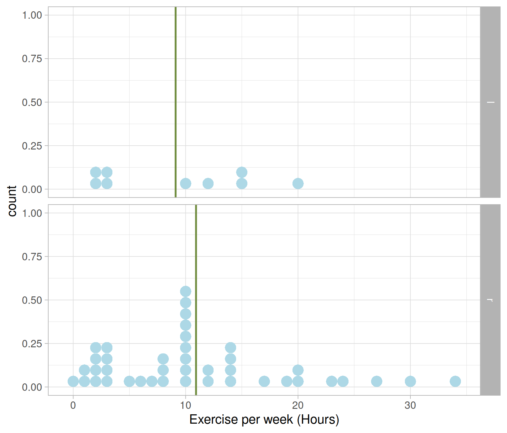
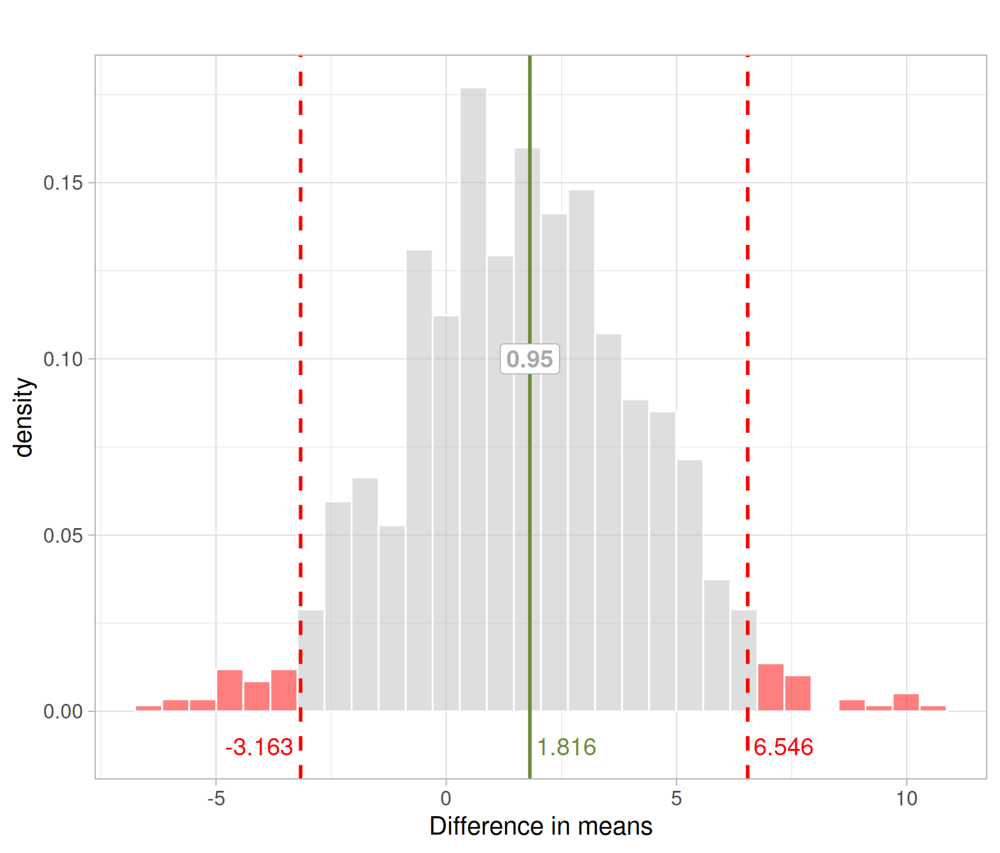

Interpret a confidence interval as the plausible values of a parameter that would not be rejected in a two-sided hypothesis test
Determine the decision for a two-sided hypothesis test from an appropriately constructed confidence interval
Be able to explain the potential problem with significant results when doing multiple tests
Do mean hours of exercise per week differ between left-handed and right-handed students?
The data contain 50 observations on a random sample of students on the following 7 variables
year: Year in schoolhand: Left (l) or Right (r) handed?exercise: Hours of exercise per weektv: Hours of TV viewing per weekpulse: Resting pulse rate (beats per minute)pierces: Number of body piercingsYou can download the data here: https://uoepsy.github.io/data/ExerciseHours.csv
The research question asks whether mean hours of exercise per week differ between left-handed and right-handed students, without specifying a direction. We are both interested in whether right-handed students exercise more than left-handed ones, or the other way around.
We start by defining the parameters needed to specify the null hypothesis:
These are estimated with the corresponding statistics in the sample:
Hypotheses:
\[ H_0: \mu_R = \mu_L \\ H_1: \mu_R \neq \mu_L \] Equivalently: \[ H_0: \mu_R - \mu_L = 0 \\ H_1: \mu_R - \mu_L \neq 0 \]
First, we will read the data into R:
library(tidyverse)
exdata <- read_csv('https://uoepsy.github.io/data/ExerciseHours.csv')
head(exdata)## # A tibble: 6 x 6
## year hand exercise tv pulse pierces
## <dbl> <chr> <dbl> <dbl> <dbl> <dbl>
## 1 4 l 15 5 57 0
## 2 2 l 20 14 70 0
## 3 3 r 2 3 70 2
## 4 1 l 10 5 66 3
## 5 1 r 8 2 62 0
## 6 1 r 14 14 62 0Next, we should make sure that the hand variable is correctly handled as a factor. At the same time, we will only select the columns of interest:
exdata <- exdata %>%
select(hand, exercise) %>%
mutate(hand = factor(hand))
head(exdata)## # A tibble: 6 x 2
## hand exercise
## <fct> <dbl>
## 1 l 15
## 2 l 20
## 3 r 2
## 4 l 10
## 5 r 8
## 6 r 14Visualise the distribution of exercise hours by dominant hand. First, let’s add a column with the mean of each group so that we can show the mean as a vertical green line.
exdata_plot <- exdata %>%
group_by(hand) %>%
mutate(avg_exercise = mean(exercise))
exdata_plot## # A tibble: 50 x 3
## # Groups: hand [2]
## hand exercise avg_exercise
## <fct> <dbl> <dbl>
## 1 l 15 9.11
## 2 l 20 9.11
## 3 r 2 10.9
## 4 l 10 9.11
## 5 r 8 10.9
## 6 r 14 10.9
## 7 l 2 9.11
## 8 r 14 10.9
## 9 r 10 10.9
## 10 l 12 9.11
## # … with 40 more rowsNext, display the distribution of exercise hours per week as a dotplot (or a histogram if you prefer) and show the mean with a vertical line geom_vline():
ggplot(exdata_plot, aes(x = exercise)) +
geom_dotplot(binwidth = 1, fill = 'lightblue', color = NA) +
facet_grid(hand ~ .) +
geom_vline(aes(xintercept = avg_exercise),
color = 'darkolivegreen4', size = 1) +
labs(x = "Exercise per week (Hours)")
Let’s now create a table displaying, for the left and right handed students in the sample, the average hours of exercise per week and standard deviation:
exdata_stats <- exdata %>%
group_by(hand) %>%
summarise(count = n(),
avg_exercise = mean(exercise),
sd_exercise = sd(exercise))
exdata_stats## # A tibble: 2 x 4
## hand count avg_exercise sd_exercise
## <fct> <int> <dbl> <dbl>
## 1 l 9 9.11 6.83
## 2 r 41 10.9 8.33I will store the difference in sample means into a variable called diff_obs for ease of use later on:
diff_obs <- exdata_stats$avg_exercise[2] - exdata_stats$avg_exercise[1]
diff_obs## [1] 1.815718Recall we are interested in testing a claim about the (unknown) population difference in means: \[ \mu_R - \mu_L \]
We estimate it with the sample difference in means \[ \bar x_R - \bar x_L = 1.816 \text{ hrs} \qquad = D_{obs} \text{ in short} \]
Let’s now compute the bootstrap distribution. Recall that this will be centred at the sample statistic, i.e. the difference in means in the original sample shown above!
First, we should pause a second and reflect on how the data were collected in the first place. This is clearly not a randomized experiment as it is not the case that a sample of participants was collected from a population and then each participant was randomly allocated to either a treatment or another treatment.
We are, instead, in the presence of an observational study. An observational study is when researchers obtain a sample of units from a population and merely record the value of some variables on those units, without intervening in any way. In other words, they just observe the values that naturally exist in the units, without actively controlling the value of any variable.
In this case we have a sample of students from a more general population of left-handed students. Similarly, we have another sample of students from another more general population of right-handed students. To create the bootstrap distribution, we need to resample in a way that reflects how the data were collected in the first place.
To obtain a bootstrap distribution, we do the following many times. Sample 9 students, with replacement, from the original sample of left-handed students. Sample 41 students, with replacement, from the original sample of right-handed students. Then, we compute the difference between the means of those 2 samples.
First, we need to import the rep_sample_n() function, which we will use to sample with replacement:
source('https://uoepsy.github.io/files/rep_sample_n.R')We will also specify the number of samples we want to obtain, 1000 say (you could do more if you wish to have more precision).
num_samples <- 1000Then we will start by focusing on the left-handed students:
l_means <- exdata %>%
filter(hand == 'l') %>%
rep_sample_n(n = nrow(.), samples = num_samples, replace = TRUE) %>%
group_by(hand, sample) %>%
summarise(avg = mean(exercise))
l_means## # A tibble: 1,000 x 3
## # Groups: hand [1]
## hand sample avg
## <fct> <dbl> <dbl>
## 1 l 1 5.44
## 2 l 2 7.11
## 3 l 3 5.89
## 4 l 4 10.3
## 5 l 5 6.22
## 6 l 6 9.56
## 7 l 7 5.67
## 8 l 8 9.67
## 9 l 9 10.1
## 10 l 10 6.44
## # … with 990 more rowsNow, for the right-handed students:
r_means <- exdata %>%
filter(hand == 'r') %>%
rep_sample_n(n = nrow(.), samples = num_samples, replace = TRUE) %>%
group_by(hand, sample) %>%
summarise(avg = mean(exercise))
r_means## # A tibble: 1,000 x 3
## # Groups: hand [1]
## hand sample avg
## <fct> <dbl> <dbl>
## 1 r 1 12.9
## 2 r 2 9.37
## 3 r 3 10.4
## 4 r 4 11.3
## 5 r 5 11.8
## 6 r 6 11.8
## 7 r 7 8.56
## 8 r 8 12.5
## 9 r 9 8.61
## 10 r 10 9.02
## # … with 990 more rowsFinally, we combine the means of the left-handed and right-handed students:
all_means <- bind_rows(l_means, r_means) %>%
pivot_wider(names_from = hand, values_from = avg, names_prefix = "avg_")
all_means## # A tibble: 1,000 x 3
## sample avg_l avg_r
## <dbl> <dbl> <dbl>
## 1 1 5.44 12.9
## 2 2 7.11 9.37
## 3 3 5.89 10.4
## 4 4 10.3 11.3
## 5 5 6.22 11.8
## 6 6 9.56 11.8
## 7 7 5.67 8.56
## 8 8 9.67 12.5
## 9 9 10.1 8.61
## 10 10 6.44 9.02
## # … with 990 more rowsbind_rows() takes two tibbles and stacks them under each other (they must have the same column names!), while pivot_wider() changes the tibble by expanding one column into multiple columns.
For example, consider the following data, measuring an outcome “mean” on different subjects (1 and 2) at different recall periods (I = immediate, W = one week later).
The following data are in “long format”:
ID Recall Mean
1 I 6
1 W 3
2 I 3
2 W 1and the wide format is:
ID Mean_I Mean_W
1 6 3
2 3 1To go from long to wide, use pivot_wider, provide the column which gives the names: names_from = Recall, where the values come from: values_from = Mean, and give a better name to the columns otherwise it would be just I and W, so we do names_prefix = “Mean_.”
To go from wide to long, we use pivot_longer. You should provide which columns to collapse, how to call the column with the group labels: names_to = “Recall,” and how to call the column with the values: values_to = “Mean”
Let’s now compute the difference between the mean for right-handed students and left-handed students:
boot_dist <- all_means %>%
mutate(diff = avg_r - avg_l)
boot_dist## # A tibble: 1,000 x 4
## sample avg_l avg_r diff
## <dbl> <dbl> <dbl> <dbl>
## 1 1 5.44 12.9 7.48
## 2 2 7.11 9.37 2.25
## 3 3 5.89 10.4 4.55
## 4 4 10.3 11.3 0.984
## 5 5 6.22 11.8 5.53
## 6 6 9.56 11.8 2.25
## 7 7 5.67 8.56 2.89
## 8 8 9.67 12.5 2.80
## 9 9 10.1 8.61 -1.50
## 10 10 6.44 9.02 2.58
## # … with 990 more rowsWe can obtain a 95% confidence interval for the difference in means using, for example, the 0.025 and 0.975 quantiles of the bootstrap distribution:
boot_quant <- quantile(boot_dist$diff, probs = c(0.025, 0.975))
boot_quant## 2.5% 97.5%
## -3.162669 6.546274We are 95% confident that the mean exercise hours for right-handed students is between 3.2 hours less and and 6.5 hours more than for left-handed students.

If the bootstrap distribution is fairly symmetric, we can equivalently construct a 95% confidence interval by using the bootstrap standard error and report:
\[ \text{Statistic} \pm 1.96 * SE \]
In our case
se <- sd(boot_dist$diff)
se## [1] 2.574016And the interval goes from and to these two values:
diff_obs - 1.96 * se## [1] -3.229353diff_obs + 1.96 * se## [1] 6.860789We are 95% confident that the mean exercise hours for right-handed students is between -3.2 hours less and 6.9 hours more than for left-handed students.
In the this section, we have used the bootstrap distribution to provide a range of plausible values for the difference mean exercise hours per week.
We can see that the interval goes from -3.2 to 6.9 hrs. This means that a hypothetical value of 0 for the difference in means is contained in the interval. In turn, this means that 0 is a plausible value for the population difference in means and for this reason if we were to test such null hypothesis in a two-sided test, we would not reject \(H_0 : \mu_R - \mu_L = 0\) at the 5% significance level.
We now will perform a 5% test for our hypotheses but using the null distribution approach, rather than a confidence interval.
Recall that the null distribution must be consistent with the null hypothesis: \[ H_0: \mu_R = \mu_L \\ H_1: \mu_R \neq \mu_L \]
So we must make the mean of the right-handed students the same as that of left-handed students and sample from these new data.
Left-handed students
Shift the exercise hours of left-handed students to have the same mean as the right-handed students.
Using rep_sample_n(), compute 1,000 resample means for left-handed students using the shifted exercise column.
Right-handed students
Using rep_sample_n(), compute 1,000 resample means for right-handed students.
Combine
Combine the left-handed and right-handed means into a single tibble.
Compute the difference between the mean for right-handed students and left-handed students.
Using the critical value method, test whether the sample data provide evidence (at the 5% significance level) that the mean exercise hours for right-handed students and left-handed students are not the same.
Perform the same test using the p-value approach.
Does a test of hypothesis provide you information that a confidence interval does not?
And does a confidence interval provide you information that a test of hypothesis does not?
GOOD PRACTICE
Whenever you reject a null hypothesis, i.e. you find significant results, it is good practice to follow up your analysis by reporting a confidence interval for your statistic.
The hypothesis test tells you the strength of evidence that your sample data provide against the null hypothesis, but it does not tell you much about the magnitude of that effect or difference in means. To get the magnitude, you need a confidence interval.